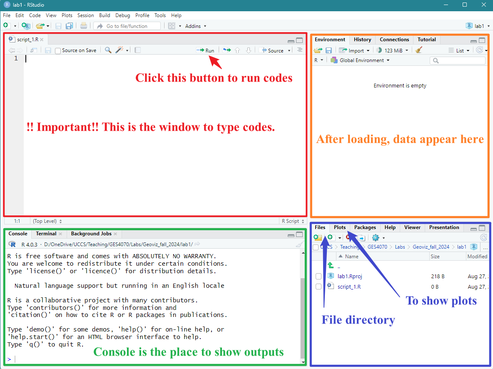

Lab 1
1. Software Installation
1.1 R and RStudio
R is the based app to process R programming language, and RStudio
integrates with R to provide further functionality such as graphical
user interface (GUI). We need to install both R and
RStudio for this workshop.
Note: there are R and RStudio installed in the
computer lab. Please use the PCs in the lab if you cannot install.
1.2 Install R
We will install R first.
Windows users:
- Please go to the website: https://cran.rstudio.com/
- Download and install R
- Download R for Windows
- install R for the first time
- Download R-4.4.1 for Windows (Remember the folder where you save it!!)
- Go to the folder where you save the file “R-4.4.1-win.exe”, double click to run the installation, use default settings, click “Next” until the end
- Finish
Mac users:
- Please go to the website: https://cran.rstudio.com/
- Download R for macOS
- Under the “Latest release”, download the version that is suitable for your machine (“R-4.4.1-arm64.pkg” or “R-4.4.1-x86_64.pkg”) –> save
- Go to the folder where you save the file, run the installation, use default settings, click “Next” until the end
- Finish
1.3 Install RStudio
Next, we will install RStudio, the GUI of R.
Windows users:
- Please go to: https://posit.co/download/rstudio-desktop/
- Download RStudio desktop for windows, then Save
- Go to the folder where you download the file “RStudio-2024.04.2-764.exe”
- Run the installation, use default settings, click “Next” until the
end
- Finish
Mac users:
- Please go to: https://posit.co/download/rstudio-desktop/
- Scroll down
- look for “macOS 12+”, click “RStudio-2024.04.2-764.dmg” and save
- Go to the folder where you download the file
- Run the installation, use default settings, click “Next” until the end
- Finish
2. Good Practice - Organizing Folders
It happens to me all the time that my course A files are mixed with course B’s. To make things easier, I highly recommend organizing your folders in the following way:
- Create a folder specifically for this course (e.g., Geoviz_fall_2024).
- Under the course folder, create a series of sub-folders for different labs and assignments separately, for example, folders with “lab1”, “lab2”, “lab3”…..”assignment1”, “assignment2”….(see Figure 1.1)
- For each lab, work in that specific folder. For example, for this
lab, you could work in the “lab1” folder under the “Geoviz_fall_2024”
course folder.

3. Launching RStudio
Remember that we have installed both R and RStudio earlier? But for this lab and for all future ones, we only need to run RStudio. This is because R is the hidden computing infrastructure while RStudio is the interface.
Run RStudio.
If it is the first time to run RStudio, it may ask you to “select the version of R to use”. Use the default option “64-bit version of R”, click “OK”. “Enable automated crash reporting” –> “Yes”
After launching RStudio, you will see the following interface (Figure
1.3). 
3.1 Create a project
Before creating a project, please make sure that you have already
created your course folder and the sub-folder “lab1” as
mentioned in Section 2: Good practice.
In RStudio menu –> File –> New Project –> Existing
Directory –> Browse & Navigate to the course folder, then the
sub-folder “lab1” –> Double clicks to go inside of
the folder “lab1” –> Open –> Create Project
Note: we will need to repeat this to create projects for future
labs and assignments.
3.1 Create a new script
A script is a sequence of instructions that can be executed by a computer or programming language (in our case, R). To create a new script, in RStudio menu –> New File –> R Script (see Figure 1.4)

Then, we also need to save the script to the “lab1” folder. File
–> Save –> Specify File Name –> Save (see Figure 1.5)
After creating and saving the new script, you should see something
similar to Figure 1.5.

Let’s try to coding now. First, let’s ask the machine to do math for us.
- Type the following command in the top-left window (red in Figure 1.5)
- Select that line
- click run
2+5+8## [1] 15 Next, let’s asking the machine
to print some words for us. Type the following command and run it.
Hint: to run codes, please select lines and click “Run”
Next, let’s asking the machine
to print some words for us. Type the following command and run it.
Hint: to run codes, please select lines and click “Run”
print("GES Geovisualization")## [1] "GES Geovisualization"4. Let’s start mapping!
tmap is a commonly used package in R for mapping. We install this package first. Type the command in your script and click “run”.
install.packages("tmap")Then, we load the tmap package. Again, type –> select –> run
# load "tmap"
library(tmap)4.1. Hello World!
The package tmap itself has a dataset on countries. Let’s load the data first, and create a world map based on their level of inequality.
Please run the command below. What
# load the world data
data("World")
# create a map
tm_shape(World) +
tm_polygons("inequality")